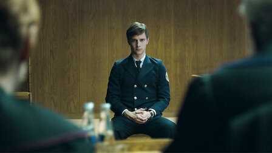
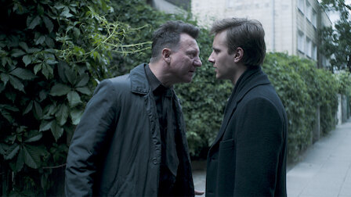

1983
|
Analisis
|
1983 es una serie de televisión de streaming de thriller polaco producida y estrenada por Netflix el 30 de noviembre de 2018. La serie, creada y escrita por Joshua Long y basada en una idea original de Long y Maciej Musia, está ambientada en una línea de tiempo alternativa en la que la caída de la República Popular Polaca comunista nunca ocurrió, y el Telón de Hierro sigue vigente. Es la primera serie original polaca de Netflix.
|
1983 es un thriller de conspiración apasionante y emocionante que cuenta la historia de un mundo distópico en el que el curso de la historia se alteró tras un ataque terrorista, provocando que la Cortina de Hierro nunca cayera y que Polonia se convirtiera en el centro del escenario político internacional que dará forma al futuro de todo el mundo. En consecuencia, la Guerra Fría nunca terminó.
Polonia se imagina que ha visto una inmigración masiva de Indochina, y en particular de la república socialista de Vietnam. Algunas escenas nocturnas ambientadas en barrios asiáticos hacinados insinúan en Ridley Scott's Blade Runner.
La historia arranca, justamente, el 12 de marzo de 1983 con una serie de atentados terroristas a lo largo y ancho de este país europeo, dando como resultado un nuevo orden mundial que evitó su liberación y la subsecuente caída de la Unión Soviética, la permanencia de la Cortina de Hierro y una Polonia regida por el Partido, un estado policial altamente represivo.
Nos vamos a 2003, veinte años después de que la Ley Marcial en Polonia fuera levantada, con el país al borde de la Guerra Civil, los tanques soviéticos como amenaza y el movimiento iniciado en los astilleros de Gdansk por el sindicato Solidaridad, del luego presidente Lech Walesa, dispuesto a tomar las calles de todo el país y derribar el comunismo. En la serie nos cuentan que hubo unos atentados con bomba que sirvieron al gobierno comunista como excusa para aplastar la ola polaca que pedía libertad y democracia con apoyo del pueblo, asustado por esos atentados.

Hay pocas referencias explícitas al comunismo en la serie (sin estatuas de Lenin en las calles, sin estrellas rojas en los uniformes o los cánticos revolucionarios). El régimen creó un estado orwelliano, cuyo único objetivo ideológico es la supresión de la disidencia y el control de los individuos. Un estado totalitario que mantiene al pueblo vigilado con mano de hierro, que secuestra y desaparece la disidencia, que reescribe la historia a su conveniencia, y por el otro el niño que sobrevivió, que se transformó en símbolo de un después y recuerdo de una era y que será quien trastorne, al conocer su propia historia, no solo su vida si no que la de todo un pueblo.
|
|
La serie está ambientada en 2003;
Ahora tras dos décadas de paz y prosperidad, los líderes del régimen preparan un plan secreto con un adversario poco probable de los 1980s que transformará radicalmente a Polonia y afectará la vida de todos los ciudadanos no solo en esa nación europea, sino en todo el mundo.
La sociedad está dirigida por la "Parte", una élite privilegiada que goza de una buena educación, un alto estatus económico y social, y vive en compuestos cerrados. El resto de la población no está interesada en la política y distrae por el escapismo y el consumismo, al
menos para bienes que no están censurados ni prohibidos.
Muchos libros occidentales están censurados. La "Brigada de Luz", un grupo de jóvenes combatientes de la resistencia, se oponen a esta dictadura. Y Kajtan, cuyos padres murieron en el atentado, y que fue criado por su abuela, es un brillante estudiante de derecho, cuya novia es hija de un jerifalte del partido. Pero el estímulo de su profesor, también juez, le llevará a buscar una verdad elusiva, más cuando su mentor muere en un extraño atropello.

La nación se prepara para celebrar un nuevo aniversario de la tragedia que acabó con la vida de cientos, miles, pero terminó “uniendo” a todos los habitantes bajo el paraguas del bien común. En medio de un clima de posibles represalias, el inspector Janów debe investigar el suicidio de un joven diseñador gráfico, uno de tantos ocurridos recientemente, en apariencia ligado con la Brigada de rebeldes que se opone a este gobierno totalitario.
En un punto, y nada azarosamente, el oficial cruza su camino con Kajetan.Tras aprobar la tesis, su profesor favorito le cede los archivos de un viejo caso de homicidio que lo conecta con el detective, demostrándole que verdad y justicia no siempre van de la mano, mucho menos en este régimen que de pacífico y próspero tiene muy poco. Para resolver el asesinato al mismo tiempo que descubren un complot que amenaza el núcleo del estado policial y que podría llevar al caos de una revolución inminente.
Del otro lado de la vereda esta Ofelia, una de las líderes de Brigada , jovencita de convicciones fuertes, que junto a sus compañeros harán oír su descontento, claro está, sin poner en riesgo a los civiles.
Y por último tenemos al antagonista de los anteriores. Nikolaj Troyan. Un general aupado a ministro de Seguridad del gobierno. De hecho él es el gobierno en la sombra. Comunista acérrimo, no está dispuesto a permitir la caída del régimen.Bao Chun (Vu Le Hong), un vietnamita que se gana la vida traficando armas.
|
A nadie se le habrá escapado a juzgar por el título y su condición distópica que este título tiene — o quiere tener — mucho que ver con 1984, la popular obra de George Orwell que tantos paralelismos ha trazado con la sociedad actual desde su publicación a mediados del siglo XX. En este caso, la trama transcurre en el año 2003, 20 años después de los atentados terroristas que en 1982 paralizaron el proceso de liberación de esta hipotética Polonia. La subversión y "el Partido" son nombres que resonarán a lo largo de sus ocho capítulos para seguir evocando la gran obra de la distopía literaria a la que hace su particular homenaje.
|
Para apoyar la narración, sus creadores harán uso de una escenografía muy particular. Influida esencialmente por el ciberpunk de obras como Blade Runner, las calles de Polonia ofrecerán una estética azulada, con grandes charcos de lluvia en los que reflejar los neones de la calle y lo suficientemente oscura como para reforzar esa constricción en la que viven permanentemente sus ciudadanos. Con todo, esta iluminación jugará en detrimento de algunos detalles de actuación que parecen descuidados.
La serie se desarrolla en esa Polonia alternativa. Un país con un alto nivel de vida. En los flash backs que nos llevan a 1983, el contraste es absoluto. Entonces había miseria, en la Polonia que nos presentan en 2003, la situación es muy distinta, hay mayor nivel de vida, pero la represión casi puede palparse. 1983 nos retrata una hipotética Polonia muy cercana a la China actual.
La distopía sumada al ciberpunk hacen de 1983 una serie de las que te atrapan sólo con su portada y la sinopsis. Los problemas vienen con el desarrollo. Anatol Janów es el detective de la policía que debe investigar el caso del suicidio, clásico personaje del noir, el observador pesimista y cínico de ese mundo que habita, al que intenta de alguna manera enderezar haciendo bien su trabajo. Solitario, bebedor y problemático, un personaje que desarrolla Robert Więckiewicz con soltura. Por supuesto que él dudara de esa muerte autoinflingida dando comienzo a una trama que se disparará en varios caminos.
En uno de ellos nos cruzaremos con el niño, el símbolo que el estado utiliza para medrar en su desmesura, Kajetan Skowron, interpretado por Maciej Musiał, único sobreviviente de una familia que pereció en los atentados de 1983 y cuyo pasado, claro, no es del todo tan blanco y puro, como ese lirio que sostiene en la imagen que tanto promocionan. De hecho una de las verdaderas atracciones de la serie son justamente sus personajes que son construidos sin manierismo alguno, criaturas sombrías, dubitativas y ciertamente imperfectas que van tropezando con los conflictos y resolviendolos como pueden en la medida de sus posibilidades, y que dotan a la historia en general de una humanidad atractiva. Traidores por cobardía, rebeldes por venganza, héroes desilusionados, todos cargan con miserias.
Janów no come vidrio, y tiempo atrás su reputación quedó bastante manchada, de ahí que no crea todo lo que se cruza delante de sus ojos y mucho menos en la respuesta más obvia. A pesar de que quiere seguir indagando en este “supuesto suicidio”, ninguna de las autoridades de la Oficina de Seguridad de la Información para la cual trabaja, le facilita las cosas, aunque él es un tipo bastante persistente.
Hay una gran falta de definición de la estructura sobre la que se compone la sociedad de esta Polonia distópica. Desde el arranque, la serie se presenta como un drama criminal y político complejo, con numerosas líneas argumentales destinadas a explicar la razón por la que el país sigue bajo dominio soviético. Aparecerán numerosos frentes y nuevos personajes en papeles protagonistas de los que se ofrece escasa información y el desarrollo de la historia tampoco llegará a esclarecerlos, lo que deja prácticamente anulada su carga dramática. Muchos de ellos, además, parecen dispuestos sólo para enredar más la trama.
1983 Netflix
Por otro lado, la construcción de esa Polonia distópica que muestran como una fortuita amalgama entre la Europa del este comunista y el vidrio y acero de una nación pujante del siglo XXI. Acero, vidrio, luces de neón y plazas secas. Niebla, largas gabardinas y callejones sombríos. Lo que a simple descripción puede sonar caótico aquí Anna Anosowicz en el diseño de producción logra un equilibrio interesante, una rara avis elegante que enmarca satisfactoriamente la historia. Trama que se toma su tiempo en presentar y desarrollar los diferentes personajes que la sostienen, lo que invita al espectador a ser paciente, y demás está decir que no es material para una maratón o Binge-watching.
Uno de los fallos es que los personajes son arquetipos muy frecuentes en las series policíacas o de espionaje.
El policía duro, los jóvenes idealistas, el militar malo con el rostro desfigurado, etc.. Quizá sea más original con algunos secundarios, como el traficante de armas vietnamita, Bao Chu.
Quizá pueda costar aceptar esa transformación, dado que el comunismo de los ochenta en Europa era un barco que se estaba hundiendo, torpedeado precisamente por unas economías en ruinas.
Una serie decente, bien interpretada, de cuidada ambientación, que vemos en detalles como el papel de la Iglesia Católica en apoyo del régimen, cuando históricamente se posicionó contra él y esa oposición fue clave en arrastrar al pueblo contra el gobierno comunista.
|
|
Atrevida, dura con el comunismo, una ideología impuesta a la desdichada Polonia desde fuera, con la complacencia de Roosevelt y la impotencia de Churchill. Detestada por todos los pueblos que la sufrieron en sus carnes.
Es una historia construida con mil referencias claras a la historia reciente que de alguna manera, de la mejor creemos, recrea en una cercana actualidad. Desaparecidos, estado policial, la política internacional inmiscuyéndose en la política interior de un país.
Mucho más no diremos sobre las líneas narrativas en espera de que el público descubra y, quién sabe, se sorprenda por las referencias claras que hará sobre otros procesos que sí ocurrieron y los argentinos conocemos sobradamente. Pero sí alentaremos a darle una oportunidad porque, y más allá de ser una ficción que está configurada con mucha elegancia en sus imágenes y manera de desarrollarse, es y como siempre creemos, un experimento interesante sobre el comportamiento de la sociedad ante hechos traumáticos, el manejo que hacemos de nuestra realidad cuando la misma supera cualquier expectativa de horror. Lo incapaces que somos de soportar el peso de nuestras acciones.
Una historia sin héroes y muchos caídos. Otras de esas ficciones que se acercan abrumadoramente a una realidad que repasamos al ver los noticieros.
Recurre al "partido", los ataques terroristas y la decadente vida de la población para alimentar su discurso de forma artificial. Desde los primeros compases sabíamos que pretende evocar la obra de George Orwell, pero esa es una dependencia peligrosa, sobre todo si de ella requiere la transmisión del mensaje subversivo que alimenta la trama.
1984 ofrecía un discurso desgarrador estructurado de forma brillante y construido en un contexto escalofriantemente premonitorio. Era fresco y estremecedor, y los años lo han convertido en una obra de culto por su visión anunciadora de una realidad más cercana de lo que jamás habría deseado su propio autor.
La serie de Netflix es interesante como drama criminal. Poco más. El estado de represión policial se representa más en diálogos toscos y vacíos que en demostraciones reales de tiranía. La narración principal consigue definir un mundo del que definitivamente querríamos saber más, pero la historia termina siendo poco estimulante.
1983 Netflix
Ya que mencionamos los diálogos, estos son el punto más flojo del estreno de Netflix. Hay una fidelidad antinatural en su reproducción y en muchas ocasiones son una descripción literal de las acciones de los personajes. Esto se convierte en un gran problema cuando es en sus palabras donde descansa todo el peso de la trama, y ni por esas conseguirá ubicarnos apropiadamente.
Los entusiastas del bloque oriental tras la Segunda Guerra Mundial encontrarán en 1983 una serie rápida de disfrutar y con una reproducción que muchos considerarían inquietantemente fiel en ciertos casos. Su factura la convierte en una de las producciones más interesantes de Netflix en este año y bien merece una oportunidad, pero cada uno deberá colocar en una balanza los pros y los contras para hacer de ella su próximo visionado.
“1983” resulta una propuesta interesante si ya estamos un poco cansados de que los yanquis (o los ingleses) siempre sean los protagonistas de este tipo de historias. “Enredo” logra generar el interés y la curiosidad necesaria para un primer capítulo que deja flotando la conspiración en el aire.
Y por más que se trate de un universo de fantasía, de una realidad que finalmente no sucedió, sus mentores han trazado cierto paralelo con la coyuntura del siglo XXI: según han dicho, el autoritarismo es un fantasma que ha vuelto a la política global. "El mundo de la ficción está entrando en nuestra realidad, así que muchas cosas comienzan a convertirse en verdad, y ahí empiezo a tener miedo de los proyectos que estoy tomando", comentó Agnieszka Holland a The Guardian a principios de diciembre pasado.
Luego siguió: "Las verdaderas preguntas que se plantean aquí son: '¿tal vez estas personas son felices?', '¿tal vez la libertad está sobrevalorada?' Estos cuestionamientos son importantes para todos. Quizás las personas que se sienten perdidas quieren que alguien venga y les diga qué hacer. Tal vez nos enfrentamos a tantos desafíos, problemas y amenazas de la modernidad que no podemos soportarlo. Este es un problema en el Reino Unido, en Estados Unidos y en muchos países, no solo en los poscomunistas, como Polonia".
|
INTERROGANTES AUN SIN RESPUESTAS CLARAS
Kajetan va EE.UU.
Kajetan Skowron convencido por su novia Karolina Lis, aborda un avión a América para huir de Polonia.
Sin embargo, una vez a bordo de Kajetan fue recibido por el padre ministra de Karolina, Wladyslaw Lis (Andrzej Chyra), quien le informó que no estaba seguro de si el estudiante de derecho se uniría a él para el viaje y dijo que se reunirían con el presidente de los EE.UU..
Una semana después, Kajetan se encontró inexplicablemente solo en una biblioteca estadounidense donde fue recibido por el espía William Keating (Clive Russell), quien deslizo un papel y le dijo que se ganó la confianza de algunas personas poderosas.
El periódico tenía una dirección en él y llevó a Kajetan a reunirse con su madre, que anteriormente se creía que había sido asesinada por espías después de ayudarlos.
Sin embargo, la gran pregunta es la siguiente: Wladyslaw está trabajando en secreto con los estadounidenses para derribar al gobierno polaco de adentro?
El final no dejó claro si Wladyslaw es un villano o parte de esta resistencia interna y también si William era un amigo o enemigo - pero dado que salvó a la madre de Kajetan, parece que podría estar en el lado derecho.
Había un traidor dentro de la Brigada Ligera que avisó a la SB sobre el plan para hackearlos en la red. Esencialmente iniciar un levantamiento.
La Brigada Ligera esperaba transmitir un mensaje revelando que el partido había orquestado desapariciones masivas y tomado a los hijos de estas personas, asegurándose de que los huérfanos fueran adoptados y ministrados por los fieles del partido.
Antes de que pudieran transmitir su mensaje, la policía secreta conocida como el SB destruyó su cuartel general y mató a la mayoría de los miembros de la Brigada de la Luz.
Ofelia/Effy (Michalina Olszanska) fue abatida a tiros por la SB cuando intentaba huir con Kajetan y parecía que podría estar desaparecida. Pero una última toma reveló que sus dedos seguían moviendose y que aún estaba viva.
No estaba claro si ella salió con vida después del asalto de los SBs y si en la segunda temporada , podríamos ver a Effy regresar.
Mientras tanto, un miembro de The Light Brigade Pawel Ibrom (Marcin Bosak) había sobrevivido a la embestida de la SB y estaba siendo rehén de ellos.
Hubo un siniestro disparo final en el que Pawel estaba en una morgue rodeada de los cuerpos de sus compañeros caídos y se reveló que había sido el topo. De nuevo, es probable que vuelva en cierta capacidad en caso de que el show vuelva.
Comienza la Operación León del Norte
Una historia que ha involucrado al general Kazimierz Swietobór (Miroslaw Zbrojewicz), quien ha estado formulando un plan conocido como Operación León Norte.
La operación parece estar envuelta en misterio, pero los estadounidenses parecían estar involucrados en cierta capacidad con la maniobra militar.
También había un topo de América, que les estaba alimentando la información polaca mientras aconsejaba al general.(militar)
Los detalles de la Operación León Norte parecen explorarse con más detalle si el espectáculo regresa. Sin embargo al parecer trata de una maniobra militar conjunta en alta mar donde se pretende entregar a iran ojivas nucleares y regibir a cambio cuotas de petroleo a precios favorables de forma continua. Polonia esté vendiendo esas armas a Irán que al parecer planea usarlas contra Israel en un ataque nuclear.
Finalmente, el deshonrado oficial de policía Anatol Janów (Robert Wieckiewicz) fue elogiado exponiendo inadvertidamente el cuartel general de la Brigada Ligera y esencialmente ayudando a la SB.
Consió un ascenso al departamento de homicidios y fue nombrado detective de alto rango, al verlo restaurado a su antigua gloria.
Aunque trató de olvidarse de la inquietante conspiración que él y Kajetan tropezaron, es muy probable que de alguna manera sea arrastrado de nuevo a este mundo de intriga de nuevo.
|
|
https://www.express.co.uk/showbiz/tv-radio/1055749/1983-Netflix-ending-explained-finale-episode-8-requiem-recap-spoilers-kajetan-anatol-effy
https://www.latercera.com/culto/2019/01/02/1983-serie-guerra-fria/
https://seriesaldetalle.wordpress.com/2018/12/07/critica-serie-polaca-1983/
https://cuatrobastardos.com/2018/12/03/review-1983-temporada-completa/
https://es.wikipedia.org/wiki/1983_(serie_de_televisi%C3%B3n)
https://www.netflix.com/ni/title/80205593
https://www.hobbyconsolas.com/reviews/critica-1983-nueva-serie-distopica-netflix-338797
https://decine21.com/series/1983-39360
https://malditosnerds.com/analisis-1983-n13150/
https://indiehoy.com/series/3-series-politicas-recomendadas-para-ver-en-netflix-1983-traidores-patriota-no-deseado-con-hasan-minhaj/
|
|
|
1.2
|
|